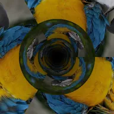

Tunnel

Binabalot ang layer sa isang walang katapusang tunnel at lumilipad sa loob nito. Inililipat ng phase ang texture sa haba nito.
Mga Setting
| Setting | Uri | Saklaw | Default |
|---|---|---|---|
| Pag-ikot X | Anggulo | -3600° hanggang 3600° | 0° |
| Pag-ikot Y | Anggulo | -3600° hanggang 3600° | 0° |
| Pag-ikot Z | Anggulo | -3600° hanggang 3600° | 0° |
| Phase | Numero | -1000 hanggang 1000 | 0 |
| Bilis | Numero | -20 hanggang 20 | 1 |
| Pag-twist | Numero | -360 hanggang 360 | 0 |
| Ulitin | Numero | 1 hanggang 16 | 3 |
| Fog | Numero | 0 hanggang 1 | 0.4 |
| Kulay ng fog | Kulay | – | #000000 |
| Posisyon | Punto (X, Y) | -5000 px hanggang 5000 px | 0 px, 0 px |
| Scale | Numero | 0.05 hanggang 10 | 1 |